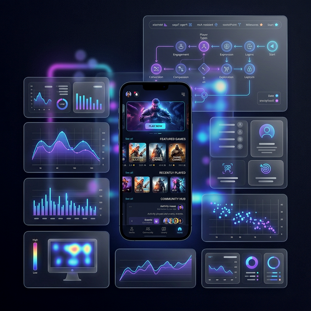

Derivco - Luminbrane
View Details
UX Lead
I directed the UX research strategy, creating clear plans to connect user needs with our business goals. By mentoring teams and partnering closely with data, product, and engineering, I ensured our decisions were backed by real evidence and practical to build.
UX research lead
Scalable UX
